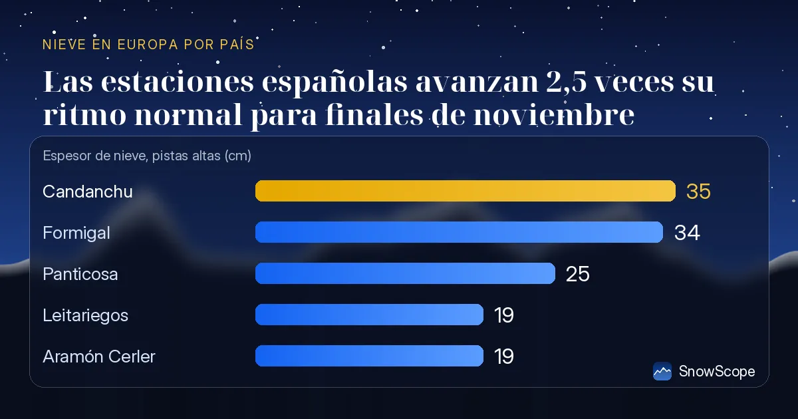
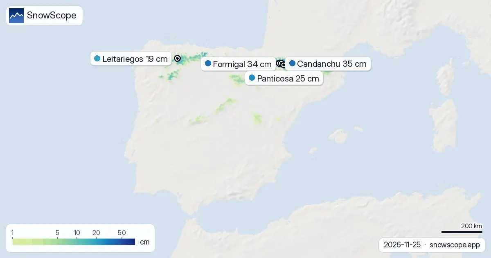

Las estaciones españolas avanzan 2,5 veces su ritmo normal para finales de noviembre
Las estaciones de montaña españolas han avanzado mucho respecto a su profundidad de nieve típica para finales de noviembre. Candanchú, Formigal y Panticosa están todas entre 1,8 y 5 veces su cobertura normal, gracias a las nevadas intensas de los últimos tres días.
Consulta la previsión de nieve en tiempo real de Candanchu en la app SnowScopeEspesor de nieve, alertas de nieve polvo y mapa 3D, gratis.
¿Cuánto avanzo llevan ahora las estaciones españolas?
Candanchú está en 35 cm hoy, casi 2,5 veces sus habituales 14 cm en esta fecha. Formigal sostiene 34 cm (normalmente 19 cm en esta época del año). Panticosa está especialmente bien abastecida: sus 25 cm son cinco veces la profundidad típica de principios de temporada de 5 cm. Incluso Aramón Cerler, la estación más alta aquí, tiene 19 cm donde normalmente hay 13 cm.
Hace una semana, la mayoría de estas estaciones prácticamente no tenían nieve en el suelo. El cambio en los últimos siete días ha sido espectacular. La cobertura de nieve a nivel regional ha saltado de 300 km² a casi 16 000 km², y los Pirineos españoles han recibido hasta 35 cm de nieve fresca en apenas 72 horas.
| Resort | Today | Normal for the date | Share of normal |
|---|---|---|---|
| Candanchu | 35 cm | 14 cm | 250 % |
| Formigal | 34 cm | 19 cm | 179 % |
| Panticosa | 25 cm | 5 cm | 500 % |
| Aramón Cerler | 19 cm | 13 cm | 146 % |

¿Qué es lo normal para finales de noviembre en España?
Noviembre es un mes escaso en las montañas españolas. La mayoría de estaciones están sobre terreno desnudo o parches finos hasta que llega diciembre. En Panticosa, un día típico de finales de noviembre ve solo 5 cm. Candanchú, uno de los lugares más fiables de principios de temporada, promedia 14 cm. Este año, las montañas han roto el patrón.
La comparación importa porque nos dice si esta nieve se va a quedar o se va a fundir rápido. Cuando estás muy por encima de lo normal en esta fecha, el manto nivoso se está construyendo de una manera que los esquiadores de principios de temporada rara vez ven. Sugiere aire más frío de lo usual en las cimas altas y humedad que llegó pronto.

¿Dónde está la mejor nieve en España hoy?
Tres zonas montañosas destacan. Los Pirineos españoles han recogido lo más: 35 cm en los últimos 72 horas, con Candanchú y Formigal sosteniendo ambos 34–35 cm. Las Montañas Cantábricas al noroeste han añadido 26 cm en tres días, mientras que las montañas gallegas (también 26 cm en 72 horas) están alcanzando rápidamente.
Por encima de 2000 m, la nieve tiene profundidad real. La banda de 2000 a 2500 m sostiene un promedio de 9 cm en la región mapeada, con 83 por ciento de cobertura. Más arriba aún, desde 2500 m hacia arriba, el promedio es 12 cm. Por debajo de 1500 m, el terreno está casi desnudo.
¿Qué viene después en el pronóstico?
Viene más nieve, aunque los aguaceros van a remitir. Mañana, 26 de noviembre, se perfila como el día más nevador de la semana, con hasta 15 cm posibles en las zonas más altas. Para finales de esta semana (hasta el 28 de noviembre), espera 6–9 cm más. Después de eso, la segunda semana de diciembre se ve más fuerte: hasta 25 cm está en el pronóstico a largo plazo para principios de diciembre.
Los Pirineos españoles y los picos Cantábricos deberían ver lo más de los próximos aguaceros. Estaciones como Candanchú y Formigal se beneficiarán más. Estaciones más bajas como Leitariegos (a 1791 m) tienen pronóstico de solo 1 cm en los próximos tres días, así que sus actuales 19 cm son valiosos y quizá no crezcan mucho más esta semana.
Profundidad de nieve por altitud: dónde se rompe la cobertura
El manto nivoso tiene un límite de altura marcado. Entre 1500 y 2000 m, la cobertura cae a 54 por ciento y la profundidad se reduce a 4 cm. Por debajo de 1500 m encuentras prácticamente nada: 7 por ciento de cobertura y 0 cm de profundidad promedio. Esto es típico de principios de temporada: la nieve sobrevive solo en el terreno alto donde el aire es más frío.
Para esquiadores, esto significa que las laderas superiores y los picos más altos son tu objetivo. A 2000 m y más arriba, la nieve es real y lo bastante gruesa para esquiar. Muchas estaciones españolas tienen su mejor terreno por encima de esta línea, así que el momento les favorece.
Cómo se ha construido la semana, y lo que nos dice
Hace una semana (18 de noviembre), las montañas de España estaban casi desnudas: 530 km² de nieve, mayormente en diminutos parches. El viernes pasado (22 de noviembre), un sistema trajo las primeras nevadas reales—hasta 12 cm en algunos puntos, aunque solo 1490 km² estaban cubiertos. Entonces vino el empujón fuerte: en solo dos días (24–25 de noviembre), el área cubierta de nieve se quintuplicó, de 2500 km² a 15 840 km². Candanchú emergió como líder el 25 de noviembre con sus 35 cm.
Este tipo de salto—de prácticamente nada a casi 16 000 km² en una semana—sugiere un clima fuerte y de principios de temporada. Las montañas atraparon un sistema mientras el aire era lo bastante frío para que la nieve se quedara y se acumulara. Para una región tan seca como los picos altos de España, esto no es rutina.
Consejos para esquiadores
- Sube alto: por encima de 2000 m es donde la nieve es fiable ahora. Las laderas más bajas son finas o están desnudas. Candanchú y Formigal ofrecen el esquí más seguro hoy.
- Atento al tiempo mañana (26 de noviembre). Hasta 15 cm están pronosticados en los picos—buenas noticias si puedes alcanzar el terreno por encima de 2000 m antes de que el cielo se despeje.
- Ten cautela en las laderas empinadas: nieve fresca en terreno fino, especialmente en la banda de 1500–2000 m, puede ocultar rocas. Consulta el boletín oficial de avalancha antes de ir fuera de pista.
- Planifica que Leitariegos y las estaciones más bajas se mantengan finas durante la semana. Si estás basado allí, los picos superiores de los Pirineos y Cantábricos valen la pena el viaje.
- Espera fusión durante el día si sale el sol. La nieve de principios de temporada en España es a menudo ligera y cambia rápido. Esquía temprano, mantente alto, y observa la orientación de la ladera.
Sobre estas cifras
Los espesores de nieve de las estaciones son la nieve más profunda en las pistas altas en la fecha indicada; son estimaciones para una zona, no una medida en un punto. Las previsiones pueden cambiar. Consulta siempre el boletín oficial de aludes antes de salir fuera de pista.
Citar este informe
Para investigación, docencia o prensa: cifras y gráficos reutilizables libremente bajo CC BY 4.0 con esta cita.
SnowScope (2026), Las estaciones españolas avanzan 2,5 veces su ritmo normal para finales de noviembre, https://snowscope.app/blog/es/2026/11/spain-snow-ahead-of-normal-25-november-2026.html, consultado el 2026-11-25
SnowScope (Atlas Labs). (2026, November 25). Las estaciones españolas avanzan 2,5 veces su ritmo normal para finales de noviembre. SnowScope snow reports. https://snowscope.app/blog/es/2026/11/spain-snow-ahead-of-normal-25-november-2026.html
BibTeX
@misc{snowscope2026spainsnowaheadofnormal25,
author = {{SnowScope (Atlas Labs)}},
title = {Las estaciones españolas avanzan 2,5 veces su ritmo normal para finales de noviembre},
year = {2026},
month = nov,
howpublished = {\url{https://snowscope.app/blog/es/2026/11/spain-snow-ahead-of-normal-25-november-2026.html}},
note = {Published 2026-11-25 10:38 UTC; accessed 2026-11-25}
}· CC BY 4.0 · Métodos, datos y herramientas →
Candanchu: nieve y temperatura según la altura, este invierno vs el pasado (herramientas) →
Sigue Candanchu
Gratis: un aviso cuando llega la nieve y la previsión cada mañana.